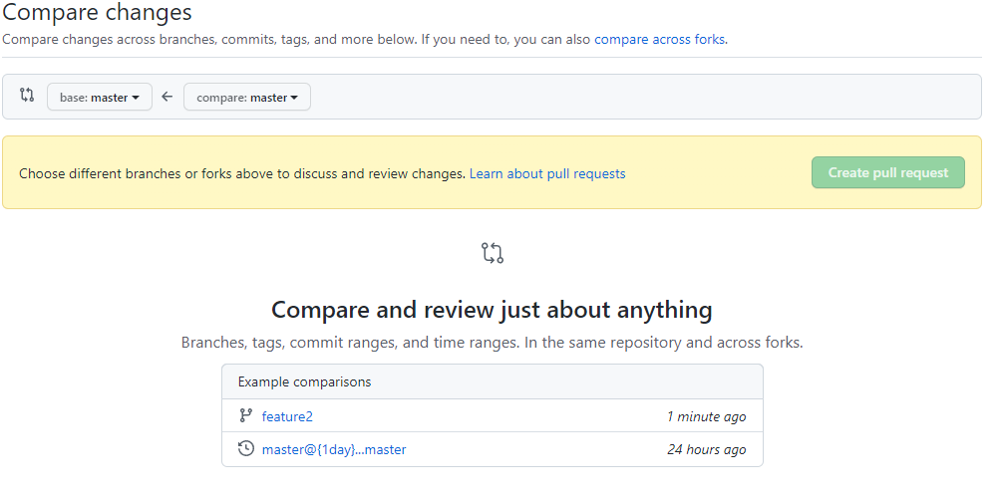
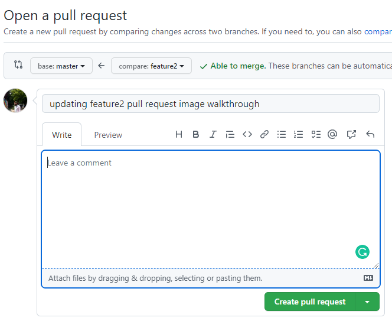
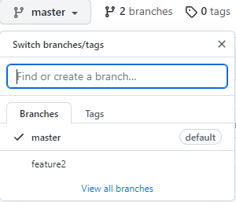

developer makes a change to their feature branch
-
developer pulls master branch from Github using Git in a terminal:
git pull origin master or git clone * repo url *
-
developer switches to the desired branch
git checkout -b feature1
-
changes are made to the new feature1 branch and committed
git commit -m "enter what was changed here"
-
changes are pushed from the local repo to the remote repo feature1 branch
git push origin -feature1
developer submits a pull request from Github page
-
from the remote repo page, select "pull requests"
-
from the new page, select "New pull request"
-
here the dev selects the branch to push, in are case it's feature2
 -
here the dev can review the changes there they made before going through with the pull request
-
finally, the dev can leave any comments for the reviewer

lead developer reviews/approves/denys pull request from Github page
-
Once a pull request has been made, the maintainer will see a message on the screen like this.

-
here all pull requests can be viewed, here we just have 1 to select "created feature 2"
-
once inside the request, all the different commits and files can be viewed.
-
if everything looks good select "Merge pull request".
code merged into master when pull request is approved
-
once this message is displayed the code has been merged into the master branch. The feature2 repo can be deleted by selecting "Delete branch"
-
in a case when the branch needs to be deleted later, hover over master branch button
Select "View all branches" at the bottom
 -
from this page, choose the branch to delete